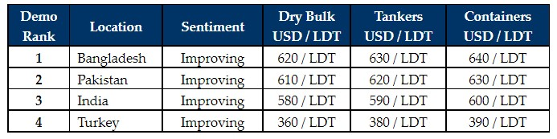

inWeekly Demolition Reports21/02/2022

Another promising week passed in the sub-continent markets this week, with resurgent Pakistani and Bangladeshi (in particular) markets putting down some show stopping numbers on available units.
We have seen several Capes sold for HKC recycling in the mid USD 600s/LDT in recent weeks, especially as chartering rates in this sector have taken a bit of a dip. Tankers keep being introduced into the recycling markets and several deals have reportedly been concluded at levels in excess of USD 650/LT LDT in Bangladesh, as the Chattogram market heats up to some increasingly unprecedented levels.
Steel prices remain firm across all sub-continent locations and even the Indian market has started to come back into the picture, such is the demand emanating from all markets at present.
Finally, the Turkish market remains impeccably poised to place some record levels of their own, if only the dearth of tonnage wouldn’t have kept the market so exquisitely stranded.
Overall, given some of the numbers on show, it is indeed surprising that not more candidates are being introduced for a recycling sale. Yet, there are likely enough inklings in the wet sector to suggest a turn in sentiments, which may lead even more Owners to hold on to their tonnage for now.
With Chinese production set to ramp up again now that Chinese New Year holidays and the winter Olympics are over, perhaps there is scope for further improvements on price as well.
For week 7 of 2022, GMS demo rankings / pricing for the week are as below.

📄 Download PDF: 2022-02-21BS_org.pdfSource: GMS,Inc. (https://www.gmsinc.net/gms_new/index.php/web)